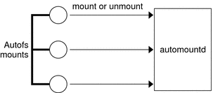
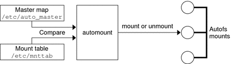
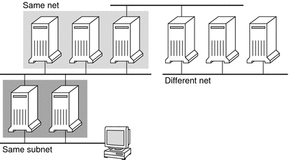
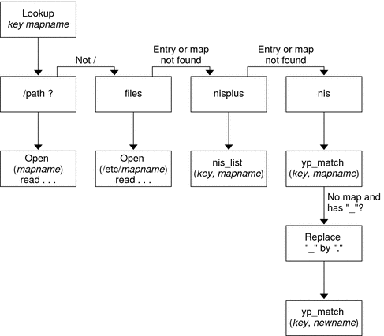

|
|||||||||||||||||||||||||||||
|
Part I Network Services Topics Part II Accessing Network File Systems Topics 4. Managing Network File Systems (Overview) 5. Network File System Administration (Tasks) 6. Accessing Network File Systems (Reference) Commands for Troubleshooting NFS Problems 8. Planning and Enabling SLP (Tasks) 10. Incorporating Legacy Services Part V Serial Networking Topics 15. Solaris PPP 4.0 (Overview) 16. Planning for the PPP Link (Tasks) 17. Setting Up a Dial-up PPP Link (Tasks) 18. Setting Up a Leased-Line PPP Link (Tasks) 19. Setting Up PPP Authentication (Tasks) 20. Setting Up a PPPoE Tunnel (Tasks) 21. Fixing Common PPP Problems (Tasks) 22. Solaris PPP 4.0 (Reference) 23. Migrating From Asynchronous Solaris PPP to Solaris PPP 4.0 (Tasks) 25. Administering UUCP (Tasks) Part VI Working With Remote Systems Topics 27. Working With Remote Systems (Overview) 28. Administering the FTP Server (Tasks) 29. Accessing Remote Systems (Tasks) Part VII Monitoring Network Services Topics |
How Autofs WorksAutofs is a client-side service that automatically mounts the appropriate file system. The components that work together to accomplish automatic mounting are the following:
The automount service, svc:/system/filesystem/autofs, which is called at system startup time, reads the master map file auto_master to create the initial set of autofs mounts. These autofs mounts are not automatically mounted at startup time. These mounts are points under which file systems are mounted in the future. These points are also known as trigger nodes. After the autofs mounts are set up, these mounts can trigger file systems to be mounted under them. For example, when autofs receives a request to access a file system that is not currently mounted, autofs calls automountd, which actually mounts the requested file system. After initially mounting autofs mounts, the automount command is used to update autofs mounts as necessary. The command compares the list of mounts in the auto_master map with the list of mounted file systems in the mount table file /etc/mnttab (formerly /etc/mtab). automount then makes the appropriate changes. This process allows system administrators to change mount information within auto_master and have those changes used by the autofs processes without stopping and restarting the autofs daemon. After the file system is mounted, further access does not require any action from automountd until the file system is automatically unmounted. Unlike mount, automount does not read the /etc/vfstab file (which is specific to each computer) for a list of file systems to mount. The automount command is controlled within a domain and on computers through the namespace or local files. The following is a simplified overview of how autofs works. The automount daemon automountd is started at boot time by the service svc:/system/filesystem/autofs. See Figure 6-3. This service also runs the automount command, which reads the master map and installs autofs mount points. See How Autofs Starts the Navigation Process (Master Map) for more information. Figure 6-3 svc:/system/filesystem/autofs Service Starts automountAutofs is a kernel file system that supports automatic mounting and unmounting. When a request is made to access a file system at an autofs mount point, the following occurs:
Note - Mounts that are managed through the autofs service should not be manually mounted or unmounted. Even if the operation is successful, the autofs service does not check that the object has been unmounted, resulting in possible inconsistencies. A reboot clears all the autofs mount points. How Autofs Navigates Through the Network (Maps)Autofs searches a series of maps to navigate through the network. Maps are files that contain information such as the password entries of all users on a network or the names of all host computers on a network. Effectively, the maps contain network-wide equivalents of UNIX administration files. Maps are available locally or through a network name service such as NIS or NIS+. You create maps to meet the needs of your environment by using the Solaris Management Console tools. See Modifying How Autofs Navigates the Network (Modifying Maps). How Autofs Starts the Navigation Process (Master Map)The automount command reads the master map at system startup. Each entry in the master map is a direct map name or an indirect map name, its path, and its mount options, as shown in Figure 6-4. The specific order of the entries is not important. automount compares entries in the master map with entries in the mount table to generate a current list. Figure 6-4 Navigation Through the Master MapAutofs Mount ProcessWhat the autofs service does when a mount request is triggered depends on how the automounter maps are configured. The mount process is generally the same for all mounts. However, the final result changes with the mount point that is specified and the complexity of the maps. Starting with the Solaris 2.6 release, the mount process has also been changed to include the creation of the trigger nodes. Simple Autofs MountTo help explain the autofs mount process, assume that the following files are installed. $ cat /etc/auto_master # Master map for automounter # +auto_master /net -hosts -nosuid,nobrowse /home auto_home -nobrowse /share auto_share $ cat /etc/auto_share # share directory map for automounter # ws gumbo:/export/share/ws When the /share directory is accessed, the autofs service creates a trigger node for /share/ws, which is an entry in /etc/mnttab that resembles the following entry: -hosts /share/ws autofs nosuid,nobrowse,ignore,nest,dev=### When the /share/ws directory is accessed, the autofs service completes the process with these steps:
Hierarchical MountingWhen multiple layers are defined in the automounter files, the mount process becomes more complex. Suppose that you expand the /etc/auto_shared file from the previous example to contain the following: # share directory map for automounter
#
ws / gumbo:/export/share/ws
/usr gumbo:/export/share/ws/usrThe mount process is basically the same as the previous example when the /share/ws mount point is accessed. In addition, a trigger node to the next level (/usr) is created in the /share/ws file system so that the next level can be mounted if it is accessed. In this example, /export/share/ws/usr must exist on the NFS server for the trigger node to be created. Caution - Do not use the -soft option when specifying hierarchical layers. Refer to Autofs Unmounting for an explanation of this limitation. Autofs UnmountingThe unmounting that occurs after a certain amount of idle time is from the bottom up (reverse order of mounting). If one of the directories at a higher level in the hierarchy is busy, only file systems below that directory are unmounted. During the unmounting process, any trigger nodes are removed and then the file system is unmounted. If the file system is busy, the unmount fails and the trigger nodes are reinstalled. Caution - Do not use the -soft option when specifying hierarchical layers. If the -soft option is used, requests to reinstall the trigger nodes can time out. The failure to reinstall the trigger nodes leaves no access to the next level of mounts. The only way to clear this problem is to have the automounter unmount all of the components in the hierarchy. The automounter can complete the unmounting either by waiting for the file systems to be automatically unmounted or by rebooting the system. How Autofs Selects the Nearest Read-Only Files for Clients (Multiple Locations)The example direct map contains the following: /usr/local -ro \
/bin ivy:/export/local/sun4\
/share ivy:/export/local/share\
/src ivy:/export/local/src
/usr/man -ro oak:/usr/man \
rose:/usr/man \
willow:/usr/man
/usr/games -ro peach:/usr/games
/usr/spool/news -ro pine:/usr/spool/news \
willow:/var/spool/news The mount points /usr/man and /usr/spool/news list more than one location, three locations for the first mount point, two locations for the second mount point. Any of the replicated locations can provide the same service to any user. This procedure is sensible only when you mount a file system that is read-only, as you must have some control over the locations of files that you write or modify. You want to avoid modifying files on one server on one occasion and, minutes later, modifying the “same” file on another server. The benefit is that the best available server is used automatically without any effort that is required by the user. If the file systems are configured as replicas (see What Is a Replicated File System?), the clients have the advantage of using failover. Not only is the best server automatically determined, but if that server becomes unavailable, the client automatically uses the next-best server. Failover was first implemented in the Solaris 2.6 release. An example of a good file system to configure as a replica is man pages. In a large network, more than one server can export the current set of man pages. Which server you mount the man pages from does not matter if the server is running and exporting its file systems. In the previous example, multiple mount locations are expressed as a list of mount locations in the map entry. /usr/man -ro oak:/usr/man rose:/usr/man willow:/usr/man In this example, you can mount the man pages from the servers oak, rose, or willow. Which server is best depends on a number of factors, including the following:
During the sorting process, a count is taken of the number of servers that support each version of the NFS protocol. Whichever version of the protocol is supported on the most servers becomes the protocol that is used by default. This selection provides the client with the maximum number of servers to depend on. After the largest subset of servers with the same version of the protocol is found, that server list is sorted by proximity. To determine proximity IPv4 addresses are inspected. The IPv4 addresses show which servers are in each subnet. Servers on a local subnet are given preference over servers on a remote subnet. Preference for the closest server reduces latency and network traffic. Note - Proximity cannot be determined for replicas that are using IPv6 addresses. Figure 6-5 illustrates server proximity. Figure 6-5 Server ProximityIf several servers that support the same protocol are on the local subnet, the time to connect to each server is determined and the fastest server is used. The sorting can also be influenced by using weighting (see Autofs and Weighting). For example, if version 4 servers are more abundant, version 4 becomes the protocol that is used by default. However, now the sorting process is more complex. Here are some examples of how the sorting process works:
Note - Weighting is also influenced by keyword values in the /etc/default/nfs file. Specifically, values for NFS_SERVER_VERSMIN, NFS_CLIENT_VERSMIN, NFS_SERVER_VERSMAX, and NFS_CLIENT_VERSMAX can make some versions be excluded from the sorting process. For more information about these keywords, see Keywords for the /etc/default/nfs File. With failover, the sorting is checked at mount time when a server is selected. Multiple locations are useful in an environment where individual servers might not export their file systems temporarily. Failover is particularly useful in a large network with many subnets. Autofs chooses the appropriate server and is able to confine NFS network traffic to a segment of the local network. If a server has multiple network interfaces, you can list the host name that is associated with each network interface as if the interface were a separate server. Autofs selects the nearest interface to the client. Note - No weighting and no proximity checks are performed with manual mounts. The mount command prioritizes the servers that are listed from left to right. For more information, see automount(1M) man page. Autofs and WeightingYou can influence the selection of servers at the same proximity level by adding a weighting value to the autofs map. For example: /usr/man -ro oak,rose(1),willow(2):/usr/man The numbers in parentheses indicate a weighting. Servers without a weighting have a value of zero and, therefore, are most likely to be selected. The higher the weighting value, the lower the chance that the server is selected. Note - All other server selection factors are more important than weighting. Weighting is only considered when selecting between servers with the same network proximity. Variables in a Map EntryYou can create a client-specific variable by prefixing a dollar sign ($) to its name. The variable helps you to accommodate different architecture types that are accessing the same file-system location. You can also use curly braces to delimit the name of the variable from appended letters or digits. Table 6-7 shows the predefined map variables. Table 6-7 Predefined Map Variables
You can use variables anywhere in an entry line except as a key. For instance, suppose that you have a file server that exports binaries for SPARC and x86 architectures from /usr/local/bin/sparc and /usr/local/bin/x86 respectively. The clients can mount through a map entry such as the following: /usr/local/bin -ro server:/usr/local/bin/$CPU Now the same entry for all clients applies to all architectures. Note - Most applications that are written for any of the sun4 architectures can run on all sun4 platforms. The -ARCH variable is hard-coded to sun4. Maps That Refer to Other MapsA map entry +mapname that is used in a file map causes automount to read the specified map as if it were included in the current file. If mapname is not preceded by a slash, autofs treats the map name as a string of characters and uses the name-service switch policy to find the map name. If the path name is an absolute path name, automount checks a local map of that name. If the map name starts with a dash (-), automount consults the appropriate built-in map, such as hosts. This name-service switch file contains an entry for autofs that is labeled as automount, which contains the order in which the name services are searched. The following file is an example of a name-service switch file. # # /etc/nsswitch.nis: # # An example file that could be copied over to /etc/nsswitch.conf; # it uses NIS (YP) in conjunction with files. # # "hosts:" and "services:" in this file are used only if the /etc/netconfig # file contains "switch.so" as a nametoaddr library for "inet" transports. # the following two lines obviate the "+" entry in /etc/passwd and /etc/group. passwd: files nis group: files nis # consult /etc "files" only if nis is down. hosts: nis [NOTFOUND=return] files networks: nis [NOTFOUND=return] files protocols: nis [NOTFOUND=return] files rpc: nis [NOTFOUND=return] files ethers: nis [NOTFOUND=return] files netmasks: nis [NOTFOUND=return] files bootparams: nis [NOTFOUND=return] files publickey: nis [NOTFOUND=return] files netgroup: nis automount: files nis aliases: files nis # for efficient getservbyname() avoid nis services: files nis In this example, the local maps are searched before the NIS maps. Therefore, you can have a few entries in your local /etc/auto_home map for the most commonly accessed home directories. You can then use the switch to fall back to the NIS map for other entries. bill cs.csc.edu:/export/home/bill bonny cs.csc.edu:/export/home/bonny After consulting the included map, if no match is found, automount continues scanning the current map. Therefore, you can add more entries after a + entry. bill cs.csc.edu:/export/home/bill bonny cs.csc.edu:/export/home/bonny +auto_home The map that is included can be a local file or a built-in map. Remember, only local files can contain + entries. +auto_home_finance # NIS+ map +auto_home_sales # NIS+ map +auto_home_engineering # NIS+ map +/etc/auto_mystuff # local map +auto_home # NIS+ map +-hosts # built-in hosts map Note - You cannot use + entries in NIS+ or NIS maps. Executable Autofs MapsYou can create an autofs map that executes some commands to generate the autofs mount points. You could benefit from using an executable autofs map if you need to be able to create the autofs structure from a database or a flat file. The disadvantage to using an executable map is that the map needs to be installed on each host. An executable map cannot be included in either the NIS or the NIS+ name service. The executable map must have an entry in the auto_master file. /execute auto_execute Here is an example of an executable map: #!/bin/ksh
#
# executable map for autofs
#
case $1 in
src) echo '-nosuid,hard bee:/export1' ;;
esacFor this example to work, the file must be installed as /etc/auto_execute and must have the executable bit set. Set permissions to 744. Under these circumstances, running the following command causes the /export1 file system from bee to be mounted: % ls /execute/src Modifying How Autofs Navigates the Network (Modifying Maps)You can modify, delete, or add entries to maps to meet the needs of your environment. As applications and other file systems that users require change their location, the maps must reflect those changes. You can modify autofs maps at any time. Whether your modifications are effective the next time automountd mounts a file system depends on which map you modify and what kind of modification you make. Default Autofs Behavior With Name ServicesAt boot time autofs is invoked by the service svc:/system/filesystem/autofs and autofs checks for the master auto_master map. Autofs is subject to the rules that are discussed subsequently. Autofs uses the name service that is specified in the automount entry of the /etc/nsswitch.conf file. If NIS+ is specified, as opposed to local files or NIS, all map names are used as is. If NIS is selected and autofs cannot find a map that autofs needs, but finds a map name that contains one or more underscores, the underscores are changed to dots. This change allows the old NIS file names to work. Then autofs checks the map again, as shown in Figure 6-6. Figure 6-6 How Autofs Uses the Name ServiceThe screen activity for this session would resemble the following example. $ grep /home /etc/auto_master /home auto_home $ ypmatch brent auto_home Can't match key brent in map auto_home. Reason: no such map in server's domain. $ ypmatch brent auto.home diskus:/export/home/diskus1/& If “files” is selected as the name service, all maps are assumed to be local files in the /etc directory. Autofs interprets a map name that begins with a slash (/) as local regardless of which name service autofs uses. |
||||||||||||||||||||||||||||
|